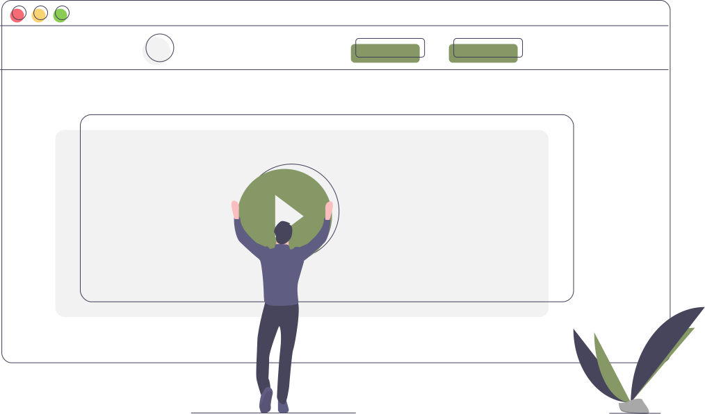

Welcome to our project
Spotify API Player
This is a project made by a cohort group of (5) people
from the HackYourOwn Experience Program. We wanted to do something rather challenging, so,
we agreed to create a custom playlist based off of deep learning methodologies,
grabbing Spotify's API, and a combo of music listened to on one account.
